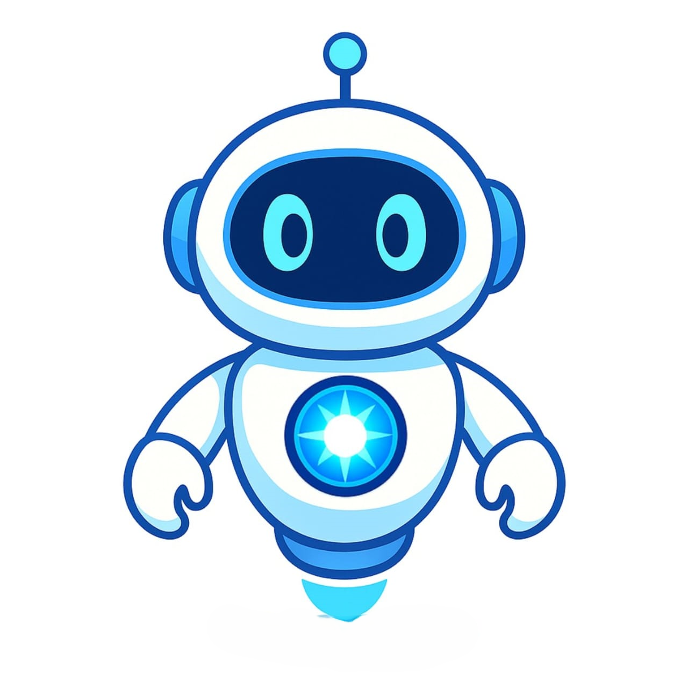

CODEX
COSMOS
LOG_001: El Origen de la Observación
"La luz es un registro fósil. En Chile, hemos desarrollado la tecnología para sintonizar fotones de hace 13.800 millones de años. No simulamos el Big Bang; lo observamos en tiempo real. Como Crononautas, nuestro deber es registrar el origen antes de que la entropía consuma los datos."
01_Concepto
Obra experimental de Realidad Virtual y Divulgación Científica de Alta Fidelidad. Una ventana tecnológica al pasado que permite al usuario viajar cronológicamente por el cosmos.

02_Descripción
Premisa
El usuario en el "Mirador del Tiempo" traduce fotones antiguos en una experiencia inmersiva 360°, viendo el Big Bang con ojos humanos.
Experiencia
Generar asombro (Awe) y pequeñez ante la escala universal. No es un juego de desafíos, sino una presencia absoluta en el vacío.
Objetivo
Completar el registro digital del Códice navegando por los hitos fundamentales de la creación de la materia.

03_Mecánicas
Crononavegación Gestual
Basado en Moon Knight. El usuario usa sus manos para manipular el firmamento, generando un efecto de 'scrubbing' temporal fluido.
Interfaz Códice
Dispositivo holográfico que se materializa frente al usuario. Tablet cuántica que despliega datos estelares en tiempo real.

04_K-PLER
IA de Protocolo. Inspirada en la frialdad de GLaDOS y la eficiencia de EVA. Asegura que la psique del usuario soporte la inmensidad de lo que está observando. Nombrado en honor a Johannes Kepler y a **Kepler**, el gato del desarrollador.
ID_CORE: KEPLER_SOLO_DEV_2026
05_Target
Nativos Digitales
12-18 años, Enseñanza Media.Aprendices Kinestésicos
Requieren manipular para entender conceptos físicos.Docentes STEM
Buscan vanguardia para sus aulas de ciencia.Fans de Sci-Fi
Valoran el Hard Science y la estética Sleek.06_Referentes

VR: Titans of Space

Visual: Interstellar

Control: Moon Knight

Teoría: Santaolalla
07_Viabilidad
Alcance Estimado
Se proyecta alcanzar un Prototipo Funcional (MVP) que incluya el Mirador del Tiempo, el sistema de navegación gestual y el primer hito completo: La Singularidad/Big Bang.
Recursos Básicos
Software: Unity 6, VFX Graph, Meta SDK.
Hardware: Meta Quest 3/2 (Standalone).
Conocimientos: C#, Optimización VR, Astrofísica.
Tiempo: 1 Semestre Académico (16 semanas).
Distribución de Roles
Ignacio Aguayo (Solo Developer): Gestión general, Lead Developer, Artista Técnico y Diseñador Narrativo. Coherencia técnica garantizada.
Planificación
- Semanas 1-4: Pre-producciónOK
- Semanas 5-8: Core GestualACTIVO
- Semanas 13-16: Entrega FinalJUNIO 2026
08_Estado
"Fase de definición conceptual terminada. Actualmente prototipando la manipulación de partículas para el Solemne 2."
SYSTEM_PROCESS: 25%_DEPLOYED
09_Propuesta de Valor
Rigurosidad Científica
Uso de datos reales de la ESO/NASA para que el asombro sea veraz y educativo.
Inmersión Kinestésica
Sentir el tiempo en las manos mediante gestos naturales aumenta radicalmente la retención.
Soberanía de Datos
Chile no solo pone el cielo, sino la tecnología punta para interpretar el origen.